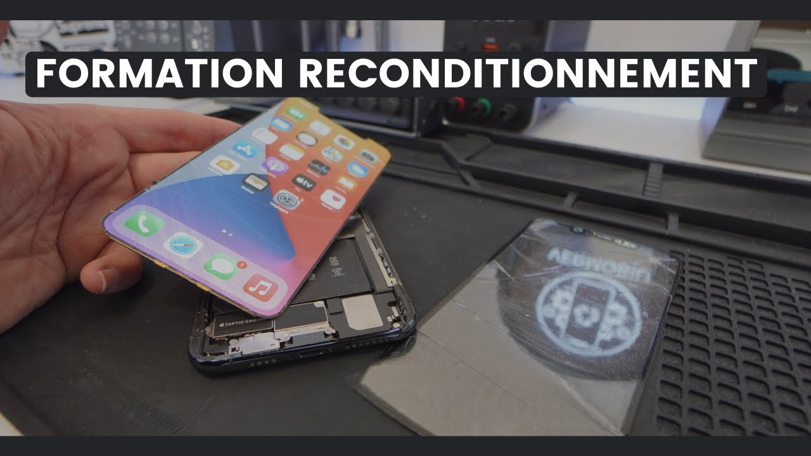

Formation professionnelle
Maîtrisez l’art du reconditionnement d’écran iPhone
Screenfix propose une formation professionnelle complète dédiée au reconditionnement d’écrans d’iPhone, destinée aux réparateurs souhaitant aller plus loin que le simple remplacement. Cette formation s’adresse à ceux qui veulent réduire leurs coûts, améliorer leur rentabilité et adopter une démarche écoresponsable en prolongeant la vie des écrans d’origine.
\

Au programme :
- Démontage précis de l’écran sans l’endommager
- Séparation du verre fissuré sans affecter l’écran LCD ou OLED
- Nettoyage et désoxydation des dalles
- Pose de verre trempé neuf avec OCA (optical clear adhesive)
- Utilisation de la machine à laminer et de la chambre à vide
- Contrôle qualité et test final de l’écran reconditionné
Une formation pratique et personnalisée
La formation se déroule en petit groupe, dans un atelier entièrement équipé. Chaque participant travaille sur des écrans réels (iPhone X à 14 Pro), avec un accompagnement personnalisé de la part de techniciens spécialisés.